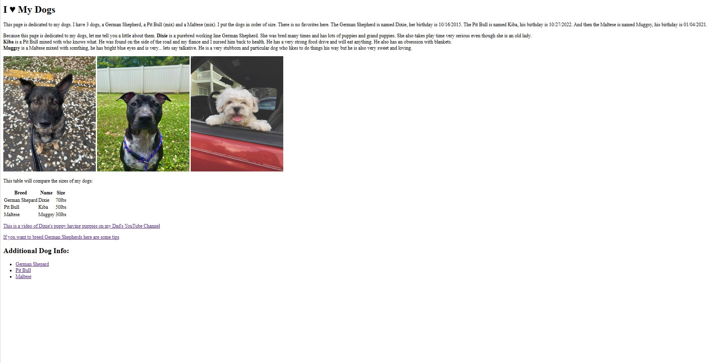
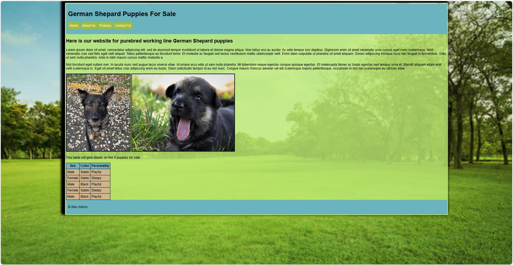
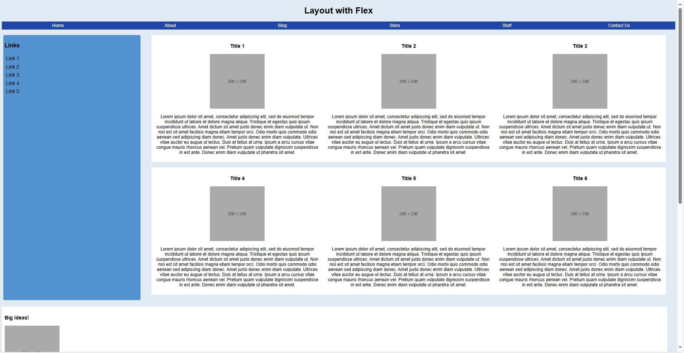
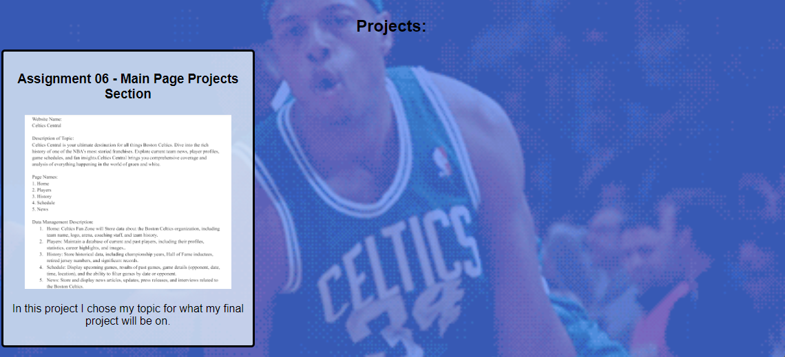
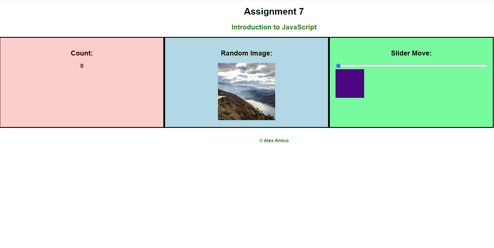

CSCE 242 - Alex Amico
In CSCE 242 we will be learning html, css and javascript.
Assignments:
Assignment 01 - Basic HTML
In this assignment I created the basic outline of the main page you see here and a website about my dogs.
Assignment 02 - Basic CSS
In this assignment I updated my main page and made a website about breeding German Shepards.
Assignment 03 - Page Layout
In this assignment I recreated a website using the same page layout that was assigned. For this assignment I used flexbox for the first time.
Assignment 04 - Main Page CSS

In this assignment I took what I learned from the last 3 assignments and updated my Main Page you see here.
Assignment 05 - Recreate CSS Page

This assignement was to recreate the UofSC School of Music webpage using everything we have learned so far including flexbox.
Assignment 06 - Main Page Projects Section
In this assignment I updated my main page to add a projects section
Assignment 07 - Intro to JavaScript
In this assignment I introduced JavaScript to a webpage. This was my first time using JavaScript and I was able to make 3 boxes, one that counts when you click on it, one that chooses a random image when clicked or refreshed and a slider that also slides a box.